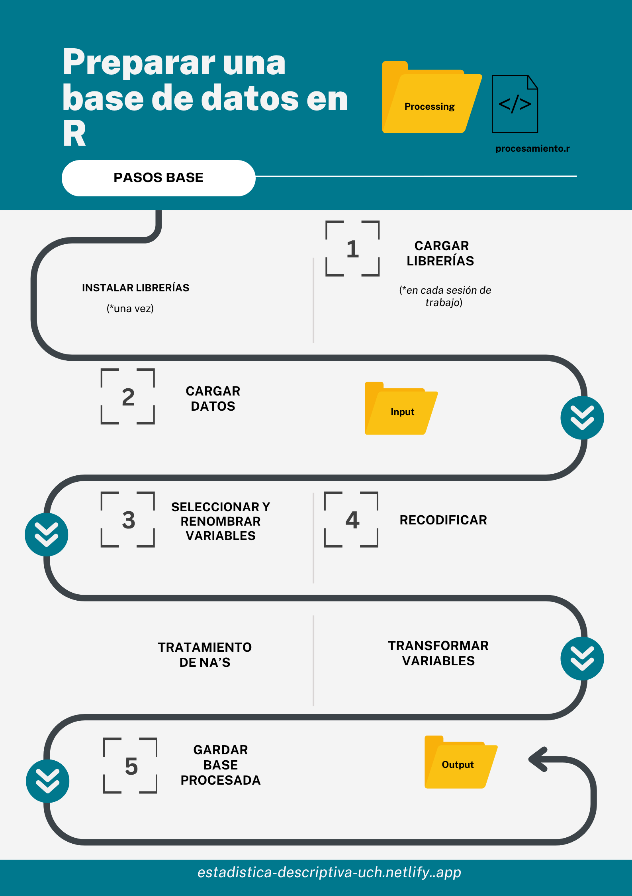

Práctico 03. Procesamiento, limpieza y manipulación de datos en R
Sesión del jueves, 16 de abril de 2026
Sesión de hoy: Conceptos claves
En la sesión de hoy, retomaremos nuestro flujo de trabajo IPO. Para ello, es importante recordar la estructura de nuestro trabajo, la cual debe tener la siguiente ruta:
Rproject/
├── input/
│ └── data/
│
├── processing/
│ └── procesamiento.R/
│
└── output/
└── datos-procesados.Rdata/Pasos procesamiento

La siguiente práctica considera la realización de los contenidos aprendidos en la sesión 1. Es decir, los ejercicios a realizar a continuación, son realizados en un script de R, alojado en un Rproject.
En caso de dudas, consultar Lectura 1
A continuación se presentará un caso general en que se deben procesar los datos para una investigación sobre “Percepciones respecto a los roles de género”. Las intrucciones sobre dicho procesamiento serán detalladas en cada ejercicio.
Recuerde que deben seguir la lógica de procesamiento aprendida en la lectura de hoy.
Datos: Se utilizan los datos del Estudio Longitudinal Social de Chile (ELSOC) realizado por COES. Recuerden que siempre es importante trabajar con el manual/libro de códigos de las bases de datos. El manual de la ELSOC 2022 lo pueden encontrar aquí.
Objetivo de la investigación: Se busca distinguir las percepciones sobre los roles de género según tramos etarios y personas identificadas políticamente a la izquierda.
Por ende, se trabajará con las siguientes variables:
Percepciones de los roles de género: Se tienen 5 preguntas
- “Las mujeres tienden a ser más refinadas y a tener mejor gusto que los hombres” (g01_01)
- “Las mujeres deberían ser queridas y protegidas por los hombres” (g01_02)
- “En nombre de la igualdad, muchas mujeres intentan conseguir ciertos privilegios” (g01_03)
- “Generalmente, cuando una mujer es derrotada limpiamente se queja de haber sufrido discriminación”(g01_04)
- “Cuando no hay muchos trabajos disponibles, los hombres deberían tener más derecho a un trabajo que las mujeres”(g01_05)
Edad: m0_edad
Identificación política: “Usando una escala de 0 a 10 donde 0 es ser de”izquierda”, 5 es ser de “centro” y 10 es ser de “derecha”, ¿Dónde se ubicaría usted en esta escala? (c15)
Ejercicio 1
Importe los datos a utilizar. Para ello descargue la base de datos ELSOC 2022 en el siguiente link.
Ejercicio 2
Utilizando select() seleccione las variables necesarias para el análisis.
Ejercicio 3
Siguiendo la lógica de la limpieza inicial de los datos, limpie las variables seleccionadas en el Ejercicio 2.
- Para ello, utilice las funciones
recode()yna.omit()cuando corresponda.
Ejercicio 4
Utilizando mutate() y case_when() transforme la variable edad a tramos etarios, considerando 3 tramos:
- Jóvenes
- Adultos
- Adultos mayores
Utilizando mutate() e if_else() transforme la variable de identificación política para que pueda medir la identificación con la izquierda política en una variable de dos categorías (“Sí” y “No”)
- Al tratarse de una escala de 11 puntos, propongan un umbral dentro de aquel puntaje que distinga ser o no de izquierda. Recuerde que dentro de dicha escala 0 es ser de “izquierda”, 5 es ser de “centro” y 10 es ser de “derecha”.
Ejercicio 5
Considerando todas las modificaciones realizadas a su objeto en los ejercicios anteriores, guarde el objeto procesado en su carpeta “Output”.
Ejercicio 6
Considerando los contenidos vistos en la clase anterior, responda:
- ¿Qué tipo(s) de objeto(s) estamos utlizando en el ejercicio?
- Mencione algún vector que este presente en el ejercicio
- Indique la naturaleza de las variables
Recuerde usar la función class() y el operador $, el cual nos permite identificar un objeto de estructura de datos distinta comtenido en otro objeto (por ejemplo, un vector que se encuentra dentro de un data.frame)